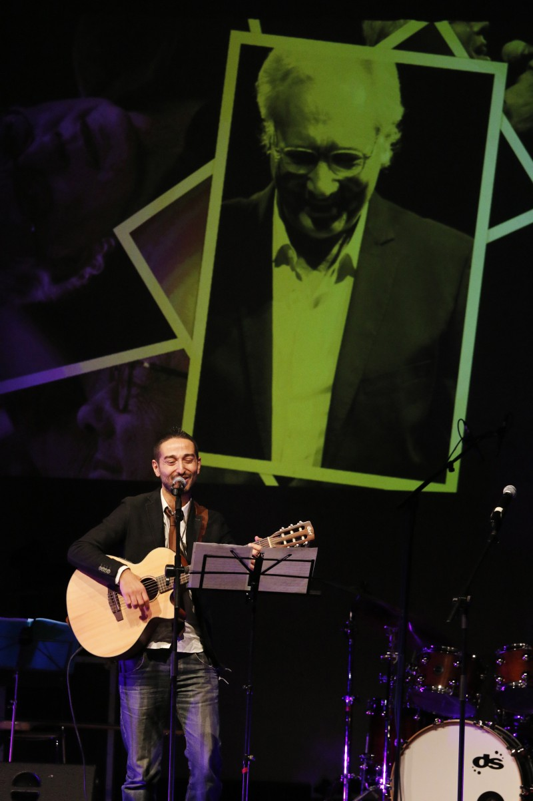
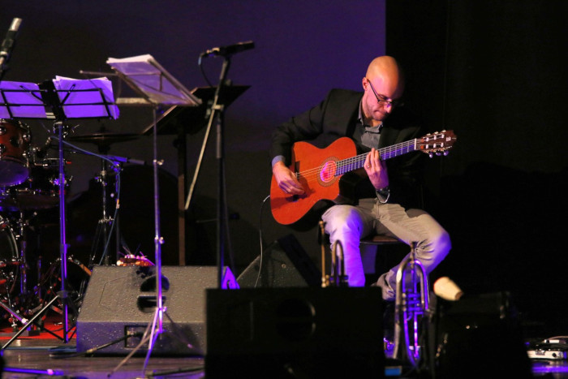
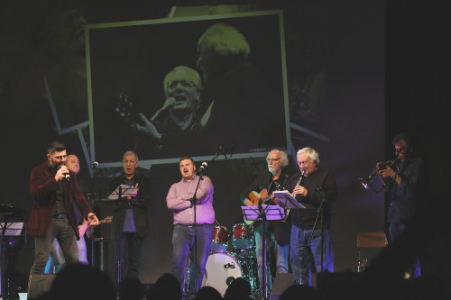

Michelangelo Giordano
 Cantautore e leader del gruppo "Le strade popolari". Autore di pezzi di straordinaria bellezza, e intensità. Tra i riconoscimenti più importanti ricevuti, il Premio Web-Una Canzone per Amnesty 2013 per il suo impegno artistico nella tutela dei diritti umani. Qui si esibisce in tributo a Enzo Jannacci. 
Enrico Porazzi
Damiano Ciapanò

Damiano si esibisce insieme Domenico Schiattone accompagnato dalla band di Grazie Maestro